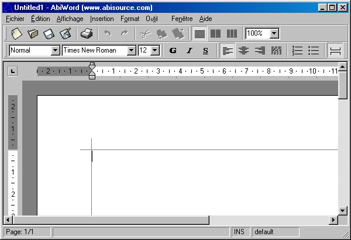

| |
| A propos Commandes Sommaire Pourquoi AbiWord? Généralités Environnement SDI Vs. MDI Installation Windows Linux Intel Linux PPC BeOS Intel BeOS PPC Solaris FreeBSD Les bases #1 Les bases #2 La saisie Le formatage Les paragraphes Les tabulations Les colonnes Les sections Les styles Insertion d'objet Imprimer Rechercher / Remplacer Personnalisation Raccourcis clavier abisource.com FAQ Crédits |
L'espace de travail d'AbiWordIl est très similaire à d'autres traitements de texte du marché. Voici l'écran qui apparaît au démarrage du programme :  Cette fenêtre se compose de plusieurs barres dont il est important de connaître la terminologie: La barre des titresElle contient le nom et le chemin du document en cours (par défaut
Untitled x), le nom du programme et les boutons Réduire,
Restaurer/Agrandir et Fermer commun à toutes les fenêtres Windows. La barre des menusCette barre contient tous les menus déroulants ; ces menus contiennent toutes les commandes proposées par AbiWord et ils sont hiérarchiques. Pour ouvrir un menu, il suffit de cliquer sur l'intitulé correspondant La barre d'outils StandardCette barre d'outils contient les icones des commandes les plus utilisées d'AbiWord sans qu'il soit besoin de passer par les menus. La barre d'outils Mise en formeCette barre d'outils contient les icones des commandes les plus utilisées permettant de mettre en forme le texte et les paragraphes sans passer par les menus. La règleLa règle permet de mettre en forme aisément les paragraphes, de gérer les retraits, les alignements et les marges de paragraphe. Elle peut être graduée en inch ou en centimètre selon votre configuration Windows. Les barres de défilement (ou ascenseurs)Lorsqu'il n y a pas suffisamment de place dans la fenêtre d'AbiWord pour faire apparaître tout le document, les barres de défilements permettent de se déplacer à travers ce document. Il peut y avoir des ascenseurs en bas ou à droite de la feuille de travail. Il suffit pour se déplacer de cliquer sur les flèches aux extrémités de l'ascenseur ou alors en cliquant sur la barre grise et en la déplaçant. La barre d'étatElle indique plusieurs informations, notamment le numéro de la page en cours, la validation du mode refrappe ou non et le nombre total de pages du document. Également, elle fournit une description des différentes commandes des menus déroulants.
|